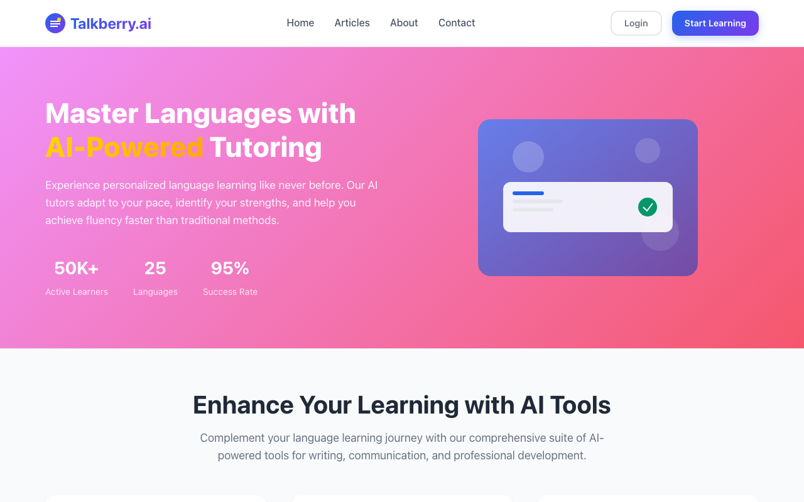
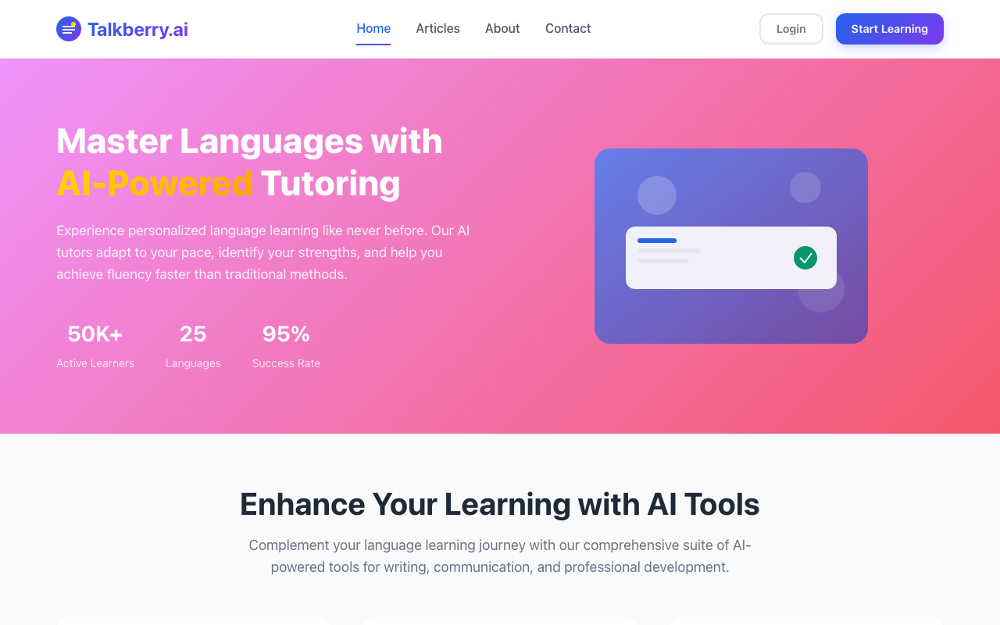
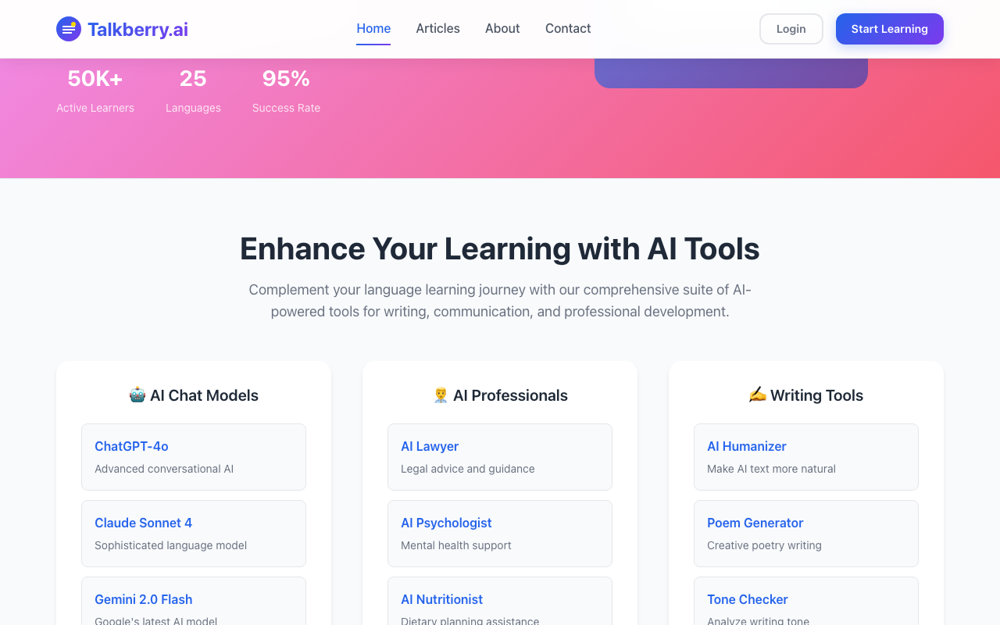
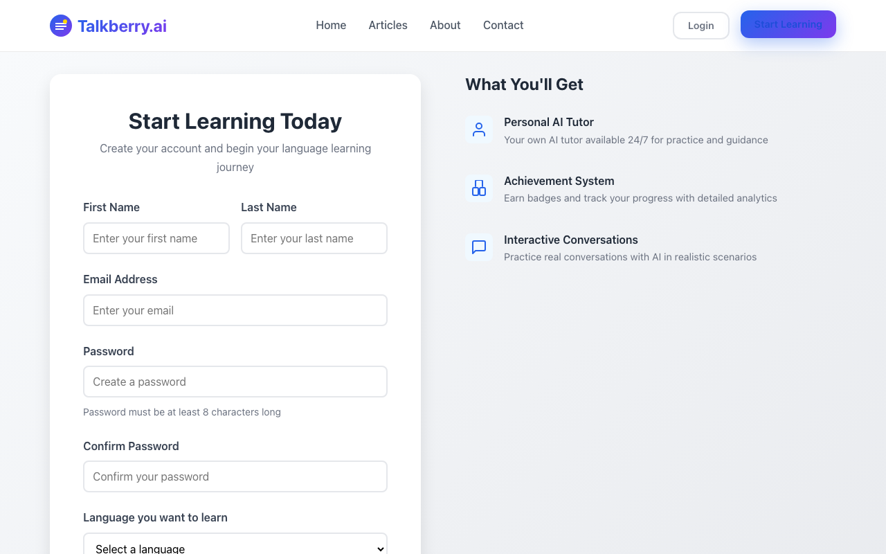
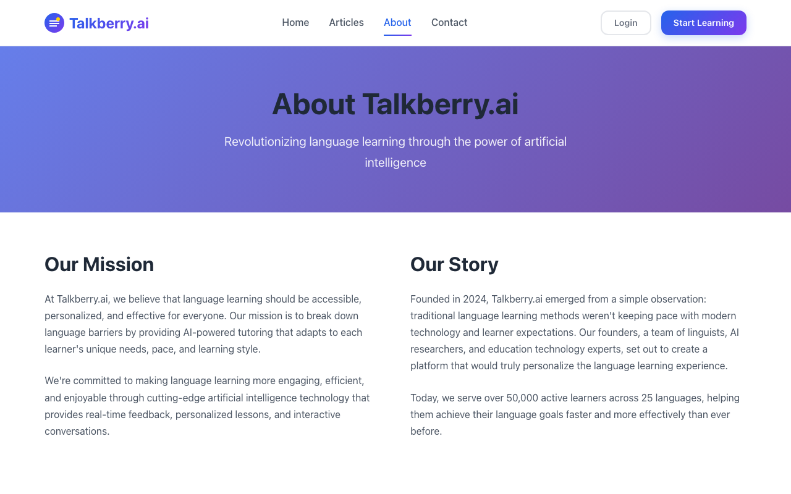

Think aloud: This looks like a language learning site, but I see weird links to ChatGPT, Claude, dating AI coach... that's odd for an English tutor app. Let me check Articles to see if they post recently, that'll tell me if it's still active.
URL/context: https://talkberry.ai/
Think aloud: Newest article is January 15, 2025, that's not too old so maybe they're still updating things. But I really need to see what the actual lesson looks like, not just blog posts.
URL/context: https://talkberry.ai/articles/

Think aloud: Those AI tool links going to a totally different site (askai.free) make me nervous - feels like this isn't even their own product for some of these. Let me check Pricing to see the actual cost before I go further.
URL/context: https://talkberry.ai/

Think aloud: I don't see Pricing in the top menu at all, just Home, Articles, About, Contact. That's odd for checking cost. Let me scroll down to find the pricing link in the footer.
URL/context: https://talkberry.ai/

Think aloud: Rather than typing addresses, I want to get there through the menus, tabs, and links on the page — I should look around, and scroll if needed.
URL/context: https://talkberry.ai/

Think aloud: These tiles are AI Lawyer, Poem Generator, ChatGPT-4o... this looks like a big AI tools directory, not really about speaking English. I don't see a Pricing link right now either. Let me just try Start Learning since that's the button for the actual practice part.
URL/context: https://talkberry.ai/

Think aloud: Rather than typing addresses, I want to get there through the menus, tabs, and links on the page — I should look around, and scroll if needed.
URL/context: https://talkberry.ai/signup/

Think aloud: This is asking me to make a full account already—name, email, password, even pick a language—before I even see how the tutor works. I don't want to sign up, that's a bit much for a first look.
URL/context: https://talkberry.ai/signup/

Think aloud: This About page seems fine—2024 founding, updated copyright to 2025, so it's not abandoned. But I still don't know the price. Let me check Pricing before deciding anything.
URL/context: https://talkberry.ai/about/

Think aloud: Copyright says 2025, team info looks real, so this isn't abandoned. Now I really need to see the price before going further.
URL/context: https://talkberry.ai/about/

Think aloud: a Pricing link right there in the footer. Let me finally click that and see the actual cost.
URL/context: https://talkberry.ai/about/

Think aloud: I have tried that address before — I should pick one of the controls I can see, or scroll to find the area another way.
URL/context: https://talkberry.ai/about/

Think aloud: Let me try that Pricing link again, maybe it just needs a proper click this time.
URL/context: https://talkberry.ai/about/

Think aloud: I have tried that address before — I should pick one of the controls I can see, or scroll to find the area another way.
URL/context: https://talkberry.ai/about/
Think aloud: Pricing link isn't doing anything again, and signup got stuck earlier too. I can't check the cost or try a lesson, so I'm stuck just reading their About story.
URL/context: https://talkberry.ai/about/